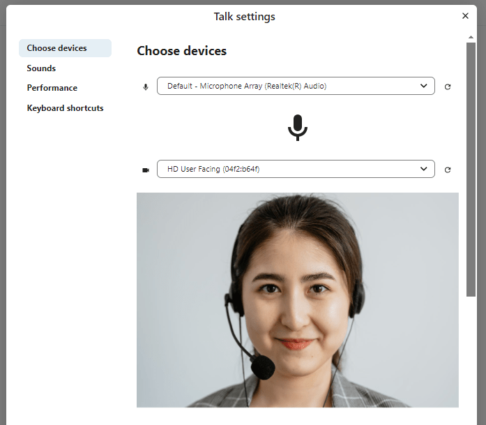
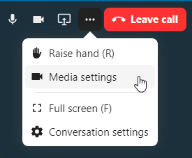
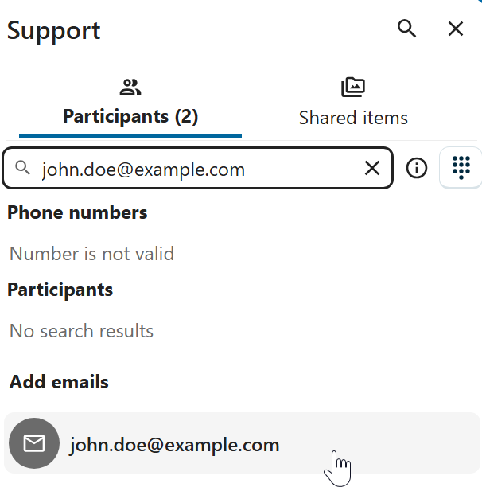

Приступ позиву или чету као гост
Nextcloud Talk омогућава аудио/видео позив и текст чет интегрисане у Nextcloud. Обезбеђује веб интерфејс као и мобилне апликације.
Више о Nextcloud Talk можете да сазнате на нашем веб сајту.
Приступање чету
If you received a link to a chat conversation, you can open it in your browser to join the chat. Here, you will be prompted to enter your name before joining.

You can also change your name later by clicking the Edit button, located top-right.

Подешавања ваше камере и микрофона могу да се пронађу у менију Подешавања. Тамо такође можете да пронађете листу пречица које можете да користите.
{kind=link}

Приступање позиву
Позив можете да започнете у било које време дугметом Започни позив. Остали учесници ће бити обавештени и моћи ће да се придруже позиву. Ако је неко други већ започео позив, дугме ће се променити у зелено Приступи позиву.

Пре него што се заиста прикључите позиву видећете проверу уређаја где можете да изаберете одговарајућу камеру и микрофон, укључите замућење позадине или чак да се прикључите било којим уређајем.
{kind=link}
Током позива, подешавања за камеру и микрофон можете да пронађете у ... менију који се налази на линији у врху прозора.
{kind=link}

За време позива, можете да утулите свој микрофон и да искључите видео дугмадима која се налазе горе десно, или да употребите пречице M да утулите звук и V да искључите видео. Такође можете да употребите размакницу да укључите/искључите укидање звука. Када вам је звук искључен, притисак на размакницу ће укључити звук тако да можете да причате све док не отпустите размакницу. Ако је звук укључен, притисак на размакницу ће да утули звук све док је не отпустите.
Ваш видео можете да сакријете (што је корисно за време дељења екрана) малом стрелицом која се налази непосредно изнад видео тока. Вратите га назад поновним притиском на малу стрелицу.
Још подешавања
У менију разговора можете да изаберете прелазак у режим пуног екрана. То такође можете да урадите користећи тастер F на тастатури. У подешавањима разговора можете да пронађете опције за обавештења и комплетни опис разговора.

Joining as an email guest
A guest can be invited to a conversation via email. The email contains a link to join the conversation. If the guest clicks the link, they will be redirected to the conversation with an individual access token.

An invitation can be done via inserting the email address in Participants tab search field.
{kind=link}

You can bulk invite email participants by uploading a CSV file. The option is available in the conversation settings under Meeting section.